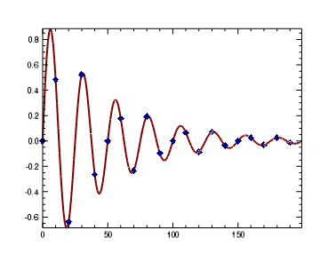

You can create plot graphics using the PLOT function. In this topic, we will use the PLOT function to draw a simple line.

; Define the data.
data = SIN(2.0*FINDGEN(200)*!PI/25.0)*EXP(-0.02*FINDGEN(200))
; Draw the plot.
p = PLOT(data, COLOR='maroon', THICK=2, $
SYMBOL=4, SYM_INCREMENT=10, $
SYM_FILLED=1, SYM_SIZE=1.5, SYM_COLOR='dark_blue')